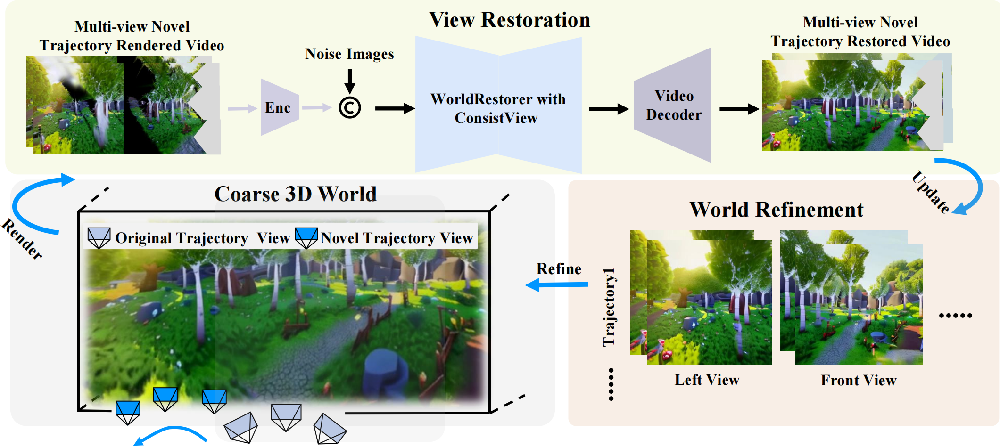

|
Ni Chaojun
I am a Master’s student at the Complex Network Systems Lab, College of Engineering, Peking University, under the supervision of Assistant Professor Wenjun Mei. Currently, I am interning at Giga, where my corporate mentor is Zhu Zheng. |

|
Research and ProjectI am interested in computer vision, deep learning, and reinforcement learning. |

|
WonderTurbo: Generating Interactive 3D World in 0.72 Seconds
Chaojun Ni, Xiaofeng Wang, Zheng Zhu, Weijie Wang, Li Haoyun, Guosheng Zhao, Jie Li, Wenkang Qin, Guan Huang, Wenjun Mei
ARXIV, 2025
WonderTurbo generates interactive 3D worlds in record time using a novel framework that enables fast and realistic world generation.
|
|
|
ReconDreamer: Crafting World Models for Driving Scene Reconstruction via Online Restoration
Chaojun Ni*, Guosheng Zhao*, Xiaofeng Wang*, Zheng Zhu*✉, etc
CVPR, 2025
*These authors contributed equally to this work
ReconDreamer enhances autonomous driving scene reconstruction by integrating world model knowledge and employing a progressive data update strategy, effectively addressing the challenges of rendering complex maneuvers.
|
|

|
WonderFree: Enhancing Novel View Quality and Cross-View Consistency for 3D Scene Exploration
Chaojun Ni, Jie Li, Haoyun Li, Hengyu Liu, Xiaofeng Wang, Zheng Zhu, Guosheng Zhao, Boyuan Wang, Chenxin Li, Guan Huang, Wenjun Mei
Arxiv, 2025
WonderFree proposes a method to enhance novel view synthesis quality and cross-view consistency, providing an improved experience in 3D scene exploration with enhanced realism and detail.
|
|
|
DriveDreamer4D: World Models Are Effective Data Machines for 4D Driving Scene Representation
Guosheng Zhao* Chaojun Ni*, Xiaofeng Wang*, Zheng Zhu*✉, Guan Huang, Xinze Chen, Boyuan Wang, Youyi Zhang, Wenjun Mei, Xingang Wang✉
CVPR, 2025
*These authors contributed equally to this work
This paper introduces DriveDreamer4D, which uses world model priors to improve 4D driving scene representation. It synthesizes novel trajectory videos based on real-world data, ensuring spatial-temporal consistency of elements through structured conditions, aligning closely with
traffic rules. |
|
|
ReconDreamer++: Harmonizing Generative and Reconstructive Models for Driving Scene Representation
Guosheng Zhao, Xiaofeng Wang, Chaojun Ni, Zheng Zhu, Wenkang Qin, Guan Huang, Xingang Wang
Arxiv, 2025
ReconDreamer++ harmonizes generative and reconstructive models to enhance driving scene representations, providing a novel approach to improve both accuracy and creativity in autonomous driving technologies.
|

|
HumanDreamer: Generating Controllable Human-Motion Videos via Decoupled Generation
Boyuan Wang, Xiaofeng Wang, Chaojun Ni, Guosheng Zhao, Zhiqin Yang, Zheng Zhu, Muyang Zhang, YuKun Zhou, Xinze Chen, Guan Huang, lihong liu, Xingang Wang
CVPR, 2025
HumanDreamer generates human-motion videos from text using a novel framework with MotionVid dataset and MotionDiT model, enhancing pose generation and supporting downstream tasks.
|
|
|
HumanDreamer-X: Photorealistic Single-image Human Avatars Reconstruction via Gaussian Restoration
Boyuan Wang, Runqi Ouyang, Xiaofeng Wang, Zheng Zhu, Guosheng Zhao, Chaojun Ni, Guan Huang, lihong liu, Xingang Wang
Arxiv, 2025
HumanDreamer-X presents a novel Gaussian restoration framework for reconstructing photorealistic 3D human avatars from a single image, significantly improving quality and realism in avatar generation tasks.
|

|
The Intelligent Chess Control System Based on Planar Constraint Conditions
Chaojun Ni, Wenhui Jiang, Yuming Fang Top Ten Undergraduate Theses of Jiangxi University of Finance and Economics (2/10) Outstanding Thesis of the School of Information Management, Jiangxi University of Finance and Economics (1/5) A human-machine gaming system has been developed at a low cost using a Raspberry Pi, a robotic arm, and a camera. This project involves lightweight target detection models and gaming algorithms. |
|
|
Feature Adaptive YOLO for remote sensing detection in adverse weather conditions
Chaojun Ni, Wenhui Jiang, Chao Cai, Qishou Zhu, Yuming Fang, IEEE VCIP, 2023 code / paper
This study introduces Feature Adaptive YOLO (FA-YOLO), a new framework for target detection that improves performance in adverse weather by enhancing image features |
Reward |